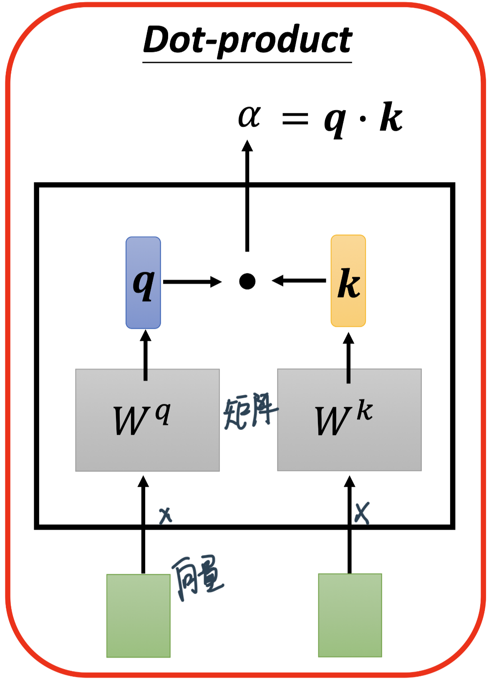
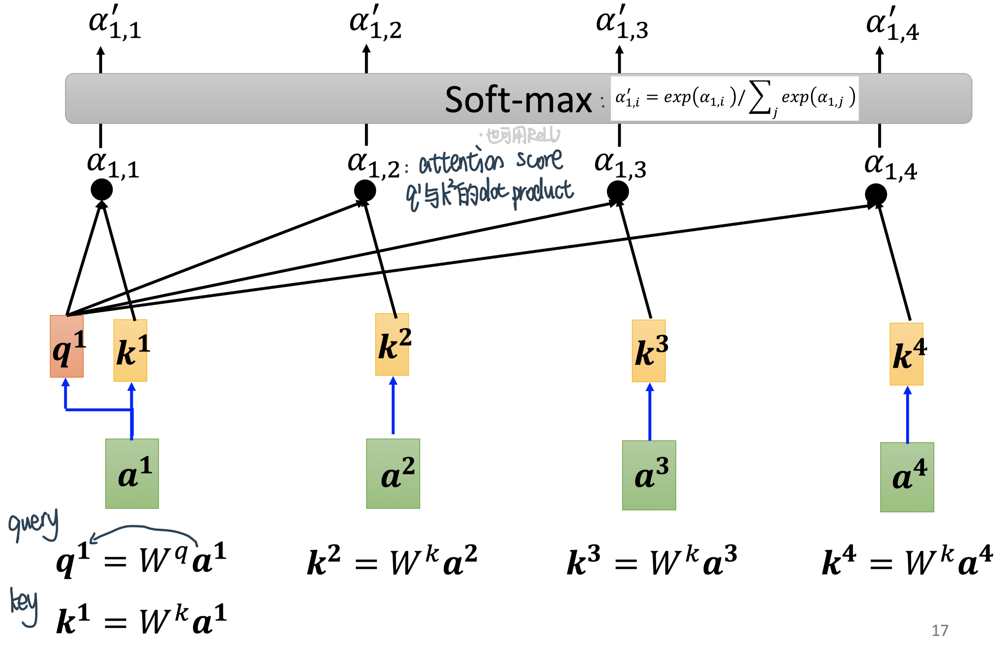
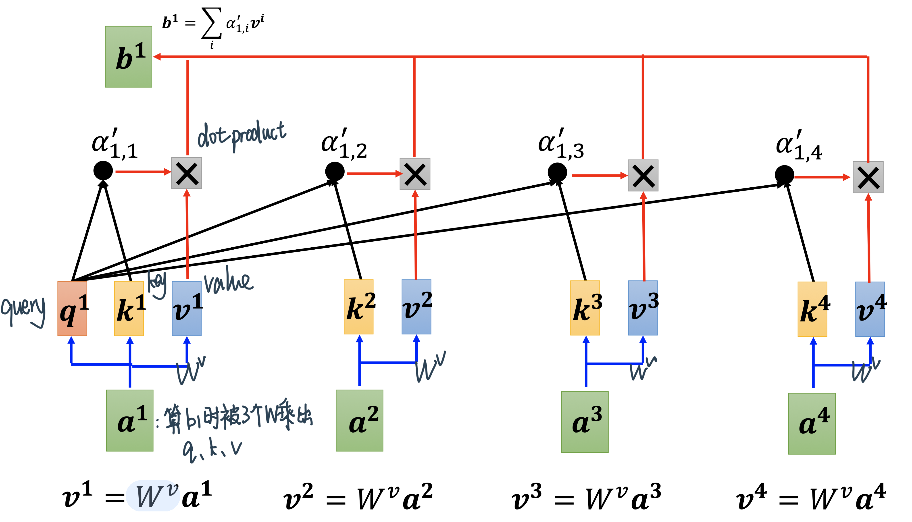
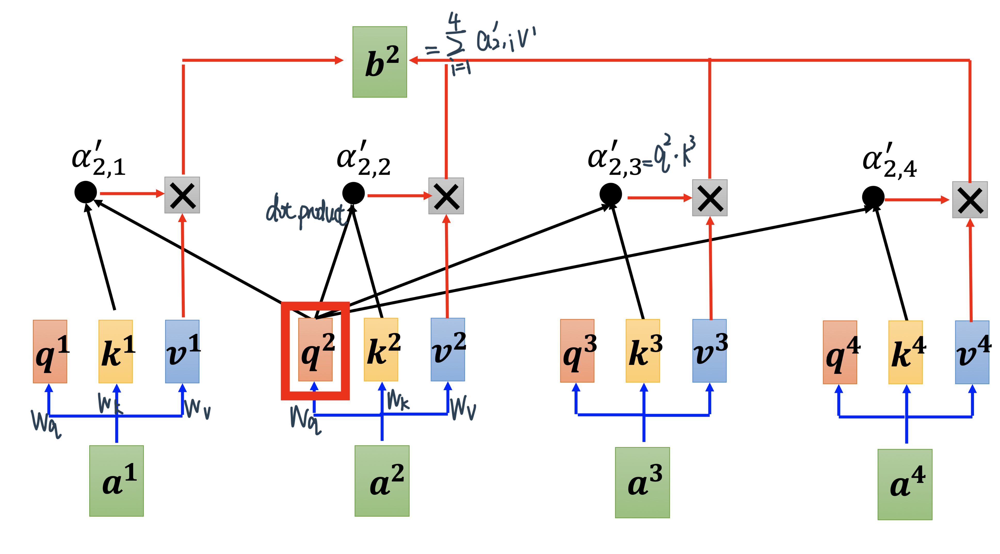
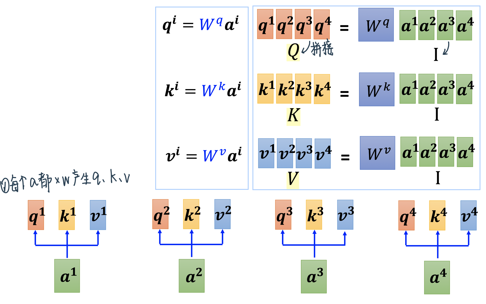
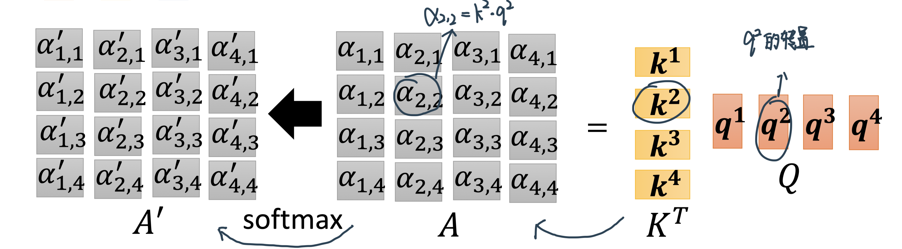

Self-Attention
Contents
Self-Attention¶
背景¶
Sophisticated Input¶
Input可以看做 / Ouput可以分成这几类
CNN里面还特别强调了CV输入的图片大小都是一样的，那现在假设每次我们Model输入的不一样就叫Sequence，Sequence的长度都不一样
Vector-Vector: 输入是一个向量，然后我们的输出,可能是一个数值,这个是Regression,可能是一个类别,这是Classification
Vector-Sequence: 比如Image captioning——input图像，output一句话

Sequence-Vector: 比如输入Movie Review，输出评价
Sequence- Sequence：比如机器翻译
把Sequence转换成input的方法¶
文字：
one-hot：开一个很长很长的向量,这个向量的长度跟世界上存在的词汇的数目是一样多的,每一个维度对应到一个词汇,Apple就是100,Bag就是010,Cat就是001,以此类推
但是这样子的表示方法有一个非常严重的问题,它假设所有的词汇彼此之间都是没有关係的,从这个向量裡面你看不到：Cat跟Dog都是动物所以他们比较接近,Cat跟Apple一个动物一个植物,所以他们比较不相像。这个向量裡面,没有任何语义的资讯
另外一个方法叫做Word Embedding：给每一个词汇一个向量,而这个向量是有语义的资讯的
如果你把Word Embedding画出来的话,你会发现,所有的动物可能聚集成一团,所有的植物可能聚集成一团,所有的动词可能聚集成一团等等
Word Embedding,会给每一个词汇一个向量,而一个句子就是一排长度不一的向量
声音信号：声音讯号其实是一排向量，我们会把一段声音讯号取一个范围叫Window
把这个Window面的信息描述成一个向量，就叫做一个Frame，语音上会把一个向量叫做一个Frame
通常这个Window的长度就是25个Millisecond
一小段25个Millisecond里面的语音讯号,為了要描述一整段的声音讯号,你会把这个Window往右移一点，从而形成了一段向量
通常移动的大小是10个Millisecond
图：一个Graph/图也是一堆向量，如Social Network
在Social Network上面每一个节点就是一个人,然后节点跟节点之间的edge就是他们两个的关系连接,比如说是不是朋友等等
而每一个节点可以看作是一个向量,你可以拿每一个人的,比如说他的Profile裡面的资讯啊,他的性别啊 他的年龄啊,他的工作啊 他讲过的话啊等等,把这些资讯用一个向量来表示
所以一个Social Network 一个Graph,你也可以看做是一堆的向量所组成的
分子信息：一个分子也可以看作是一个Graph
一个分子可以看作是一个Graph,分子上面的每一个球,也就是每一个原子，可以表述成一个向量
一个原子可以用One-Hot Vector来表示,氢就是1000,碳就是0100,然后这个氧就是0010,所以一个分子就是一个Graph,它就是一堆向量。
输出Output¶
每一个向量都有一个对应的Label：输入是四个向量的时候,它就要输出四个Label,而每一个Label,它可能是一个数值,那就是Regression的问题,如果每个Label是一个Class,那就是一个Classification的问题
文字处理：假设你今天要做的是POS Tagging,POS Tagging就是词性标註,你要让机器自动决定每一个词汇 它是什麼样的词性,它是名词 还是动词 还是形容词等等
这个任务啊,其实并没有很容易,举例来说,你现在看到一个句子,I saw a saw，这并不是打错,并不是“我看一个看”,而是“我看到一个锯子”,这个第二个saw当名词用的时候,它是锯子，那所以机器要知道,第一个saw是个动词,第二个saw虽然它也是个saw,但它是名词,但是每一个输入的词汇,都要有一个对应的输出的词性，这个任务就是,输入跟输出的长度是一样的Case,这个就是属於第一个类型的输出
语音：每个vector来看音标
Social Network：决定每个节点的特性，比如说他会不会买某一个商品,这样我们才知道说,要不要推荐某一个商品给他,
一整个Sequence，只需要输出一个Label
文字：Sentiment Analysis给机器看一段话,它要决定说这段话是正面的还是负面的
语音：机器要听一段声音,然后决定他是谁讲的
Graph：给一个分子,然后要预测说这个分子,比如说它有没有毒性,或者是它的亲水性如何
机器要自己决定,应该要输出多少个Label
我们不知道应该输出多少个Label,机器要自己决定,应该要输出多少个Label,可能你输入是N个向量,输出可能是N’个Label,為什麼是N’,机器自己决定，这种任务又叫做sequence to sequence的任务！翻译就是sequence to sequence的任务,因為输入输出是不同的语言,它们的词汇的数目本来就不会一样多
或者是语音辨识也是,真正的语音辨识也是一个sequence to sequence的任务,输入一句话,然后输出一段文字,这也是一个sequence to sequence的任务
Sequence Labeling¶
输入跟输出数目一样多的状况又叫做Sequence Labeling,你要给Sequence裡面的每一个向量,都给它一个Label。
直觉的想法1: 拿个Fully-Connected的Network，但对、词性标记的问题，你给机器一个句子,I saw a saw,对Fully-Connected Network来说,后面这一个saw跟前面这个saw完全一模一样,它们是同一个词汇啊，所以会输出一样的东西！
直觉的想法2: 所以，要让让Fully-Connected的Network,考虑context,就把前后几个向量都串起来,一起丢到Fully-Connected的Network**
但是这样子的方法还是有极限，比如对于需要考虑一整个Sequence才能够解决的任务，由于Sequence有长有短，不能通过继续开大Window来做！或者是开一个比最大Sequence大一点的Window
但是你开一个这麼大的Window,意味著说你的Fully-Connected的Network需要非常多的参数,那可能不只运算量很大,可能还容易Overfitting
Self-Attention过程¶
整体的运作效果¶
Self-Attention的运作方式就是,Self-Attention会吃一整个Sequence的资讯，输入4个Vector,它就Output 4个Vector，这4个Vector,他们都是考虑一整个Sequence以后才得到的**，然后再进Fully-Connected的Network决定要输出什麼样的结果，这个就是Self-Attention。
Self-Attention不是只能用一次,你可以叠加很多次
可以把Fully-Connected的Network,跟Self-Attention交替使用
Self-Attention处理整个Sequence的资讯，Fully-Connected的Network,专注於处理某一个位置的资讯
再用Self-Attention,再把整个Sequence资讯再处理一次
有关Self-Attention，最知名的相关的文章,就是《Attention is all you need》也就是提出了Transformer的Network架构！
普通Self-Attention¶
那接下来呢就是要跟大家说明,怎麼產生\(b^1\)这个向量,那你知道怎麼產生\(b^1\)这个向量以后,你就知道怎麼產生剩下\(b^1 b^2 b^3 b^4\)剩下的向量
我们需要根据根据\(a^1\)这个向量，找出整个很长的sequence裡面哪些部分跟判断\(a^1\)是哪一个label是有关係的
每一个向量跟\(a^1\)的关联的程度,用一个数值叫α来表示。Transformer里面用的是dot product,输入的这两个向量分别乘上两个不同的矩阵，再做element-wise 的相乘后全部加起来以后就得到一个scalar，这个scalar就是α

计算出\(b_1\)
Step1：先算出一个Input sequence中的关联性再取Soft-max，从而知道了整个Sequence里面哪些跟\(\alpha_{1}\)是最相关的——
attention score 需要α的人出\(q\)，其他人出\(k\)
Step2：从attention score中进一步抽取资讯：用attention score来weighted sum 四个value
 如果说某个向量它得到的分数越高，比如：
\(a^1\)跟\(a^2\)的关联性很强⇒\(α'_{1, 2}\)就会很大得到的值
⇒在Weighted Sum中\(α'_{1, 2}\)dominate⇒得到的\(b^1\)的值会比较接近\(v^2\)
计算出\(b_2\)：也是一样的步骤
Step 1 / 2：先算出一个Input sequence中的关联性再取Soft-max，从而知道了整个Sequence里面哪些跟\(\alpha_{2}\)是最相关的，然后再用这些attention score来weighted sum四个value

矩阵并行计算出四个\(b\)
整体过程：I乘W得到QKV、K乘Q得到Attention Matrix、V乘Attention Matrix得到O，也就是
这里的 \(\sqrt{\text { Dimension of vector } Q, K \text { or } V}\) 是Transformer增加的一个对dot-product的scaling
只有W需要学习
Step 1：转换输入——输入Sequence中的每一个\(a\)拼成\(I\)后分别乘\(W\) \(\rightarrow\) \(Q、K、V\)
 Step 2：\(K\)和\(Q\)得到attention score矩阵\(A\)
 Step 3：用\(\alpha^{\prime}\)当权平均\(v\)得到\(B\)

Multi-head Self-attention¶
Self-attention用q去找相关的k，但是相关会有不同的形式，我们可能需要多个q，不同的 q 负责不同种类的相关性
核心区别点：b有多个
计算出\(b_i\)
Step 1：计算出每个head对应的b
Step 2：再用一个矩阵得到b

Positional Encoding¶
No position information in self-attention¶
Self-attention的layer它少了位置的概念，input中的a1 a2 a3其实完全没有差别，做的操作是一摸一样的——所有的位置之间的距离都是一样的：没有任何一个位置距离比较远、没有任何位置距离比较近、没有谁在整个 sequence 的最前面,也没有谁在整个 sequence 的最后面
但是这样子设计可能会有一些问题,因為有时候位置的资讯也许很重要,举例来说,我们在做这个 POS tagging,就是词性标记的时候,也许你知道说动词比较不容易出现在句首,所以如果我们知道说,某一个词汇它是放在句首的,那它是动词的可能性可能就比较低,这样子的位置的资讯往往也是有用的！
Each positon has a unique positional vector \(e^i\)¶
可是在我们到目前為止,讲的 Self-attention 的操作裡面,根本就没有位置的资讯,所以怎麼办呢,所以你做 Self-attention 的时候,如果你觉得位置的资讯是一个重要的事情,那你可以把位置的资讯把它塞进去,怎麼把位置的资讯塞进去呢,这边就要用到一个叫做,positional encoding 的技术
你為每一个位置设定一个 vector,叫做 positional vector,这边用 \(e^i\) 来表示,上标 i 代表是位置,每一个不同的位置,就有不同的 vector,就是 \(e^1\) 是一个 vector,\(e^2\) 是一个vector,\(e^{128}\) 是一个vector,不同的位置都有一个它专属的 e,然后把这个 e 加到 \(a^i\) 上面,就结束了
就是告诉你的 Self-attention,位置的资讯,如果它看到说 \(a^i\) 好像有被加上 \( e^i\),它就知道说现在出现的位置,应该是在 i 这个位置